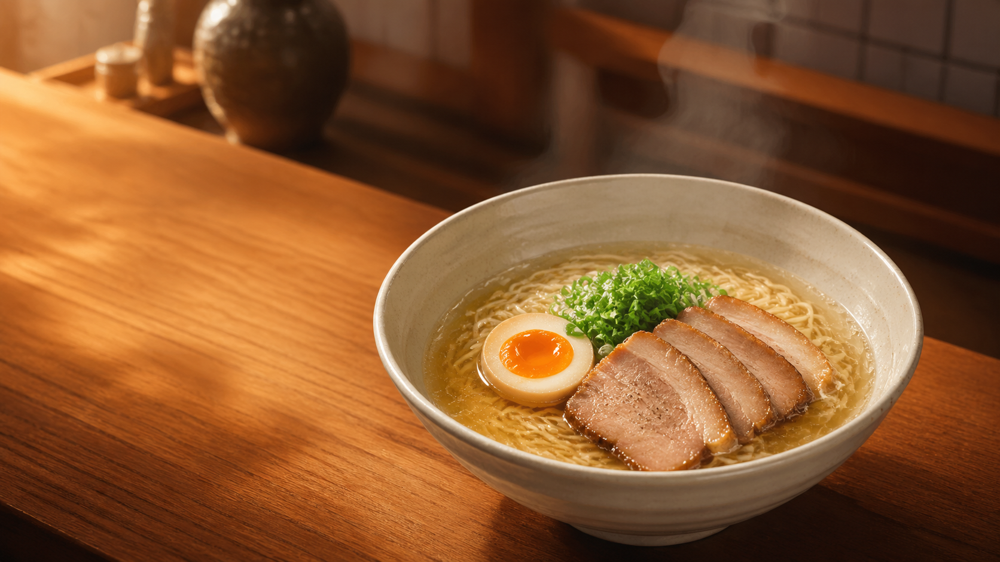
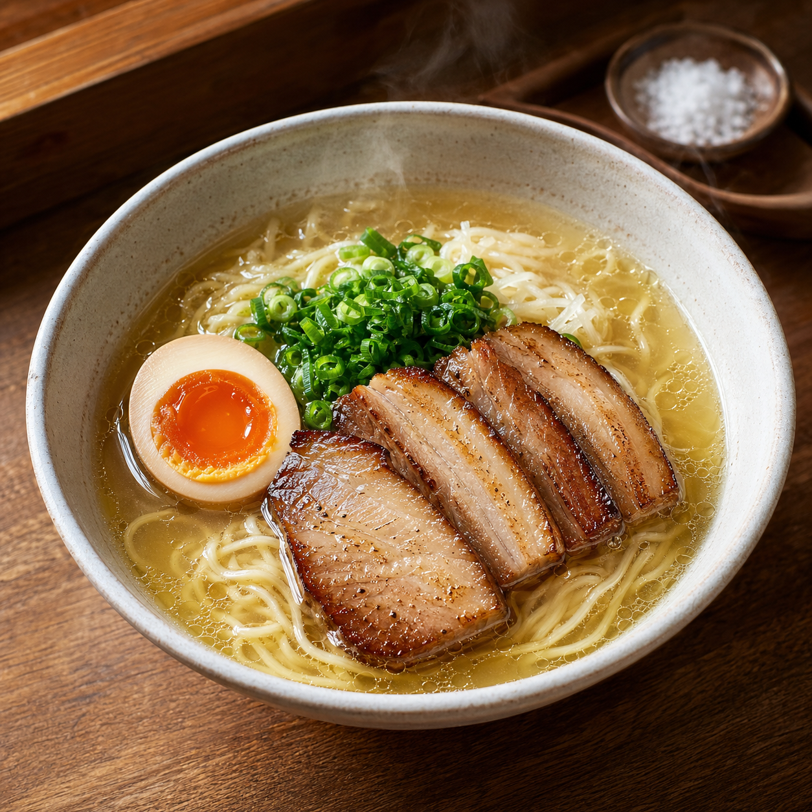
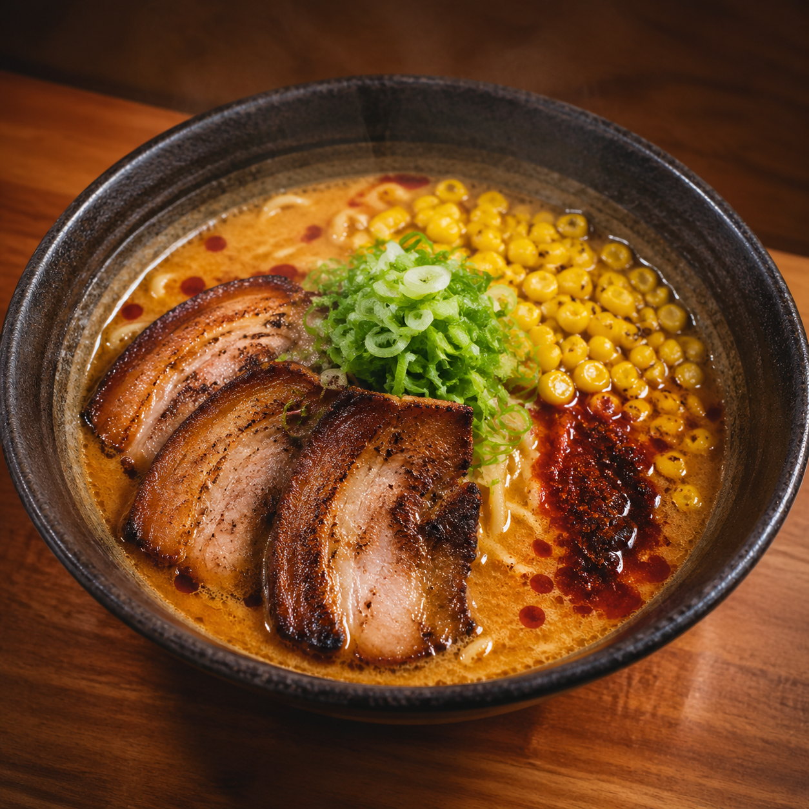
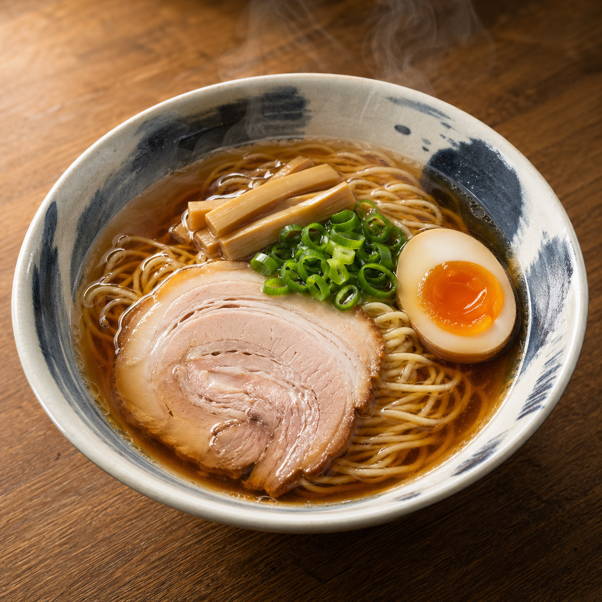
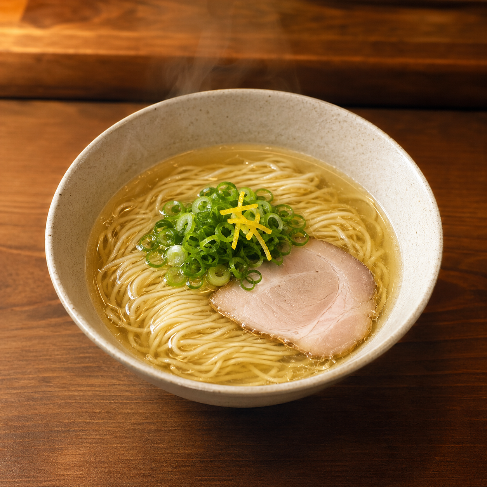

Naha / Tomari / Ryuka Noodles
島マース、アグー豚、鰹の香り。沖縄らしさを素材に宿し、毎日食べたくなる澄んだ一杯へ。

最新情報はInstagramとGoogleマップで公開予定です。
Menu

透明な鶏清湯に島マース。アグー豚の炙りチャーシュー。

香ばしい味噌と島唐辛子。夜にも強い濃厚な一杯。

鶏と鰹の旨みを重ねた、毎日食べられる定番。

飲んだ後にも軽い、夜だけの小さな塩ラーメン。
Local But Everyday
観光の記憶に残る地域性と、地元の人が週に一度食べたくなる軽さ。その両方を満たすため、素材は沖縄、味づくりは王道のラーメンに寄せています。
Access